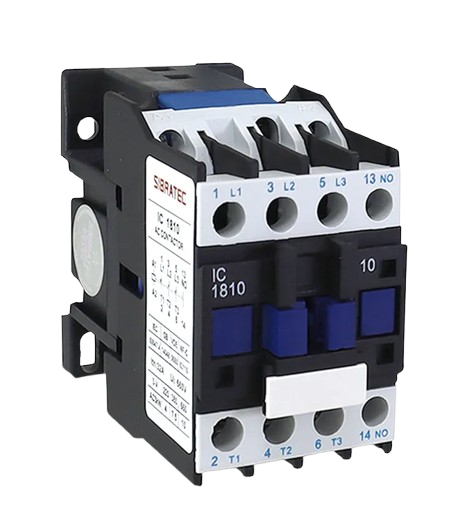
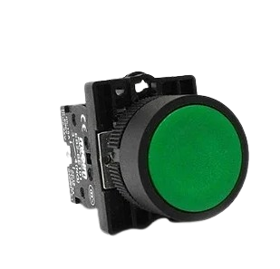
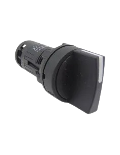
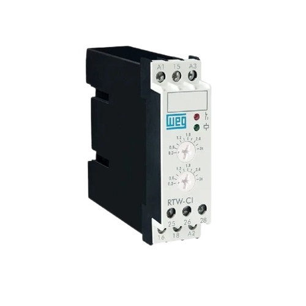

Comandos Elétricos
CONTATOR
O que é um Contator?
Os contatores são dispositivos eletromecânicos utilizados para abrir e fechar circuitos elétricos de alta corrente, sendo amplamente empregados na automação industrial. Seu funcionamento ocorre por meio de uma bobina eletromagnética que permite o acionamento remoto do circuito. Possuem contatos NA (Normalmente Aberto) e NF (Normalmente Fechado), utilizados para diferentes funções de comando e controle. Podem ser aplicados em sistemas monofásicos e trifásicos, existindo modelos auxiliares para controle e modelos de potência para o acionamento de cargas elevadas.
Os contatores permitem o controle remoto de equipamentos elétricos, aumentam a segurança dos circuitos e suportam correntes elevadas. Além disso, facilitam a automação de processos industriais, tornando as operações mais eficientes e confiáveis.
Aplicações
Os contatores são amplamente utilizados para o acionamento e desligamento de motores elétricos, sendo fundamentais em sistemas de automação industrial. Também são aplicados em sistemas de iluminação industrial e comercial, controle de bombas d’água e compressores de ar. Além disso, são muito utilizados em esteiras transportadoras, sistemas de refrigeração e ar-condicionado, bem como em máquinas industriais automatizadas.

BOTOEIRA
Conceito:
A botoeira, também conhecida como botão de pulso, é um dispositivo de comando utilizado para enviar sinais elétricos a um circuito quando acionado. Seu contato muda de estado apenas enquanto o botão permanece pressionado, retornando à posição original após ser solto.
Aplicações:
As botoeiras são amplamente utilizadas em painéis elétricos e sistemas de automação industrial para realizar funções como partida e parada de motores, acionamento de máquinas, comandos de emergência e controle de processos industriais. Elas podem possuir contatos NA (Normalmente Aberto) ou NF (Normalmente Fechado), dependendo da aplicação desejada.

CHAVE DE RETENÇÃO
O que é?
A chave de retenção é um dispositivo de comando utilizado em circuitos elétricos e sistemas de automação para manter um equipamento ligado mesmo após o operador soltar o botão de acionamento. Essa função é obtida por meio de um circuito de auto-retenção (ou selo elétrico), geralmente utilizando contatos auxiliares de um contator ou relé. Facilita a operação e aumenta a praticidade dos circuitos de comando.
Aplicações
- Acionamento de motores elétricos.
- Bombas d'água.
- Esteiras transportadoras.
- Máquinas industriais.
- Sistemas de automação.
Por exemplo ao pressionar o botão Liga, o motor continua funcionando até que o botão Desliga seja acionado.

RELÉ TEMPORIZADOR
Conceito
Um relé temporizador é um dispositivo eletromecânico ou eletrônico que combina a função de um relé com um sistema de temporização. Ele permite que um circuito seja ligado ou desligado após um intervalo de tempo programado.
Quando o relé recebe um sinal de acionamento, ele não muda seus contatos imediatamente (ou pode mantê-los acionados por um tempo após o sinal desaparecer, dependendo do tipo). A mudança ocorre de acordo com o tempo ajustado pelo usuário.
Aplicações
Os relés temporizadores são usados para controlar o acionamento e desligamento de equipamentos após um tempo programado. Suas principais aplicações incluem automação industrial, controle de motores elétricos, sistemas de iluminação automática, ventilação e refrigeração, alarmes e dispositivos de segurança, além de bombas d'água e sistemas de irrigação. Eles ajudam a automatizar processos, economizar energia e proteger equipamentos.
